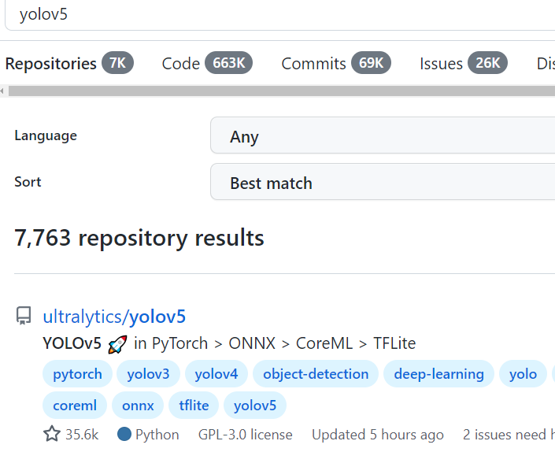
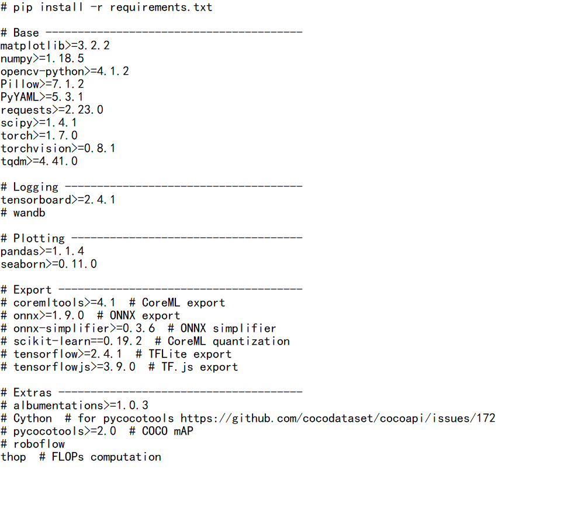
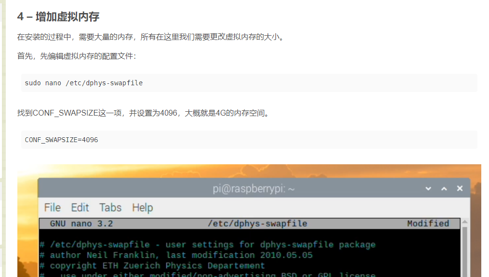

yolo部署
opencv下载
**pytorch下载见 树莓派配置文章 **
- opencv版本配置
yolov5下载
- 下载yolov5-6.0版本，使用torch1.8.0与torchvision0.9.0 版本配置

在下载了pytorch、torchvision、opencv之后我们之后进入requirements.txt文件把这三个前面用#注释掉，之后尝试对文件中的其他库进行下载

csdn上说pip3 install requirements.txt语句就可以完成安装，但是我尝试过程中发生了报错：
pandas>=1.1.4 not found and is required by YOLOv5, attempting auto-update…
之后根据报错尝试逐个进行安装：
pip3 install numpy==1.18.5 -i https://pypi.tuna.tsinghua.edu.cn/simple
其中的部分表示调用清华源实现pip加速 并不是所有的包都需要下载 按需下载即可
（此处可能还有其他的库未安装且不在requirements.txt文件中，可以选择运行detect.py文件根据报错安装相应的库）
- yolov5部署后运行前要先设置虚拟内存，否则一运行detect代码树莓派就会重启
运行detect代码直接重启的原因 可能是由于yolov5开启后会立马占据大量的运行内存，电压上来之后功率跟不上会直接关机。可以通过更换大功率充电头解决。
此外，运行detect.py前，yolo会自行检查当前系统中所有库是否符合条件(requirements.txt)，当我们已经完成所有库的下载后，可以把该文件中的下载库命令行注释掉，避免检查。

修改detect.py改写低时延
将yolov5的推理代码改写成可供其他程序调用的方式，并实现低时延
本博客所有文章除特别声明外，均采用 CC BY-NC-SA 4.0 许可协议。转载请注明来自 Zzhr's Blog！